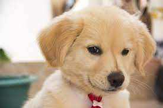

Adotar um pet permite trazer maior felicidade para o lar. São animais que ficam bastante animados de estarem na companhia de novos donos e, por isso, trazem maior vitalidade para o ambiente. A vida de toda a família se transforma com momentos de alegria e afeto.

Quando você adota um cachorro ou gato abandonado nas ruas, você está dando uma oportunidade para eles poderem ter um lar, com conforto e felicidade e, proporcionando o resgate de uma vida.
Você sabia que os gatos nas ruas têm uma expectativa de vida de 3 anos? Já quando são adotados podem viver entre 15 e 20 anos de maneira saudável. Mas por que essa diferença?
É que os gatos nas ruas ficam mais suscetíveis a contrair doenças que debilitam a imunidade (como FIV e FeLV), apresentam maior risco de se alimentar com comidas e plantas tóxicas e também podem ser atropelados ou maltratados nas ruas. Por isso, adotá-los é, realmente, proporcionar uma nova chance de vida.
.
Economia de dinheiro
Para além de tudo que falamos, preferir adotar um animal em vez de comprá-lo. Além de permitir o resgate de uma vida e ganhar amor e carinho incondicionais, você também economiza dinheiro.
Afinal, um pet adotado proporciona os mesmos laços afetivos que você pode receber de um animal de raça comprado, além de garantir acolhimento e conforto para ele. Ou seja, só benefícios!
Mas antes de adotar um pet, você deve considerar alguns pontos, tais como:
avalie se tem o espaço necessário para o animal — apartamentos pequenos para cachorros de grande porte pode trazer problemas para o pet e para você;
lembre-se da importância da castração e da vacinação;
se recolher o animal na rua, leve-o imediatamente para o veterinário para acompanhar o quadro de saúde do pet;
gatos precisam de ambientes telados para evitar fugas e acidentes;
Como vimos, a adoção de um pet é um importante ato de amor. Além de ter a sua vida transformada, você proporciona um recomeço para o animalzinho, fazendo um pet feliz. Então não perca a oportunidade de começar essa nova e linda amizade!
Você tem dúvidas sobre o processo de adoção? Conte para gente nos comentários e responderemos!